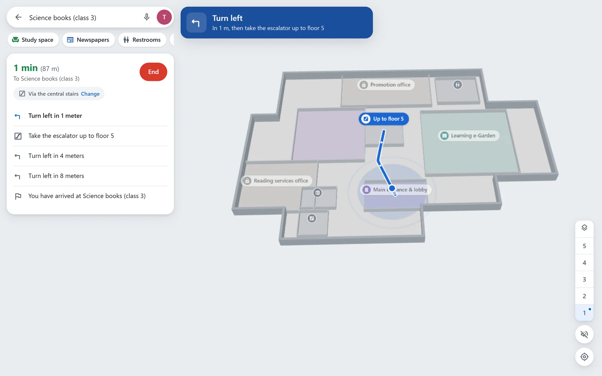
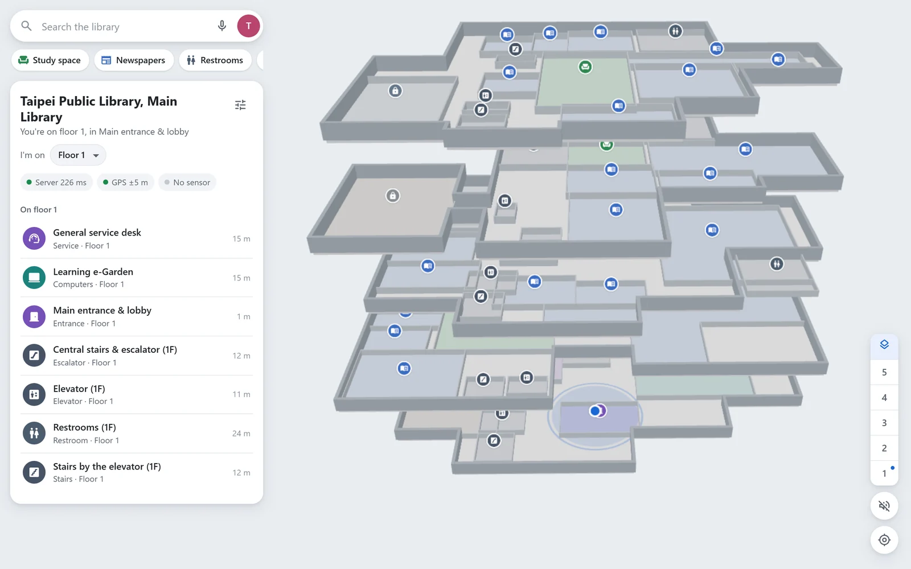

Find the shelf you're looking for, even two floors up.
Type a subject like "cooking" or "Qing dynasty" and Library Nav shows where those books are on a 3D map of the building, then walks you there. Your phone's GPS tracks where you are on a floor, and a small pressure sensor tells which floor you're on.
It works like the map apps you already use, but inside the building.
Search in your own words
A subject, a room or a friend's name, in English or Chinese. "Somewhere to study" finds the nearest seats.
Directions across floors
Turn-by-turn steps with the route drawn on each floor, and a sign where you take the stairs or the elevator.
Knows your floor
GPS can't tell floors apart indoors. A pocket-sized ESP8266 with a BMP390 pressure sensor can.
Read aloud
Low-vision mode speaks every turn, accepts voice search and makes the controls bigger.
Meet up with friends
Add friends by name, see them on the map and get directions to wherever they are.
More than one library
The Taipei Public Library Main Library and the Yorba Linda Public Library are mapped. Each building is one data file.

On a laptop, directions sit in a side panel.

All five floors of the Taipei library at once.
Why two sensors
Phone GPS is fine for "which side of the building", but it has no useful idea of height. Indoors the vertical error is easily bigger than one floor.
Air pressure drops by roughly 12 Pa per metre, so a BMP390 can clearly see the gap between floors. On its own, though, the reading drifts with the weather and says nothing about where you are on the floor. So the two are combined.
GPS (phone)Latitude and longitude, turned into metres on the floor plan and smoothed.
Pressure (BMP390)Compared with a second sensor fixed on the lowest floor, which cancels out the weather.
CombinedOne position: x and y in metres plus a floor number, kept on walkable paths.
How it fits together
Nothing talks to anything directly. Sensors, phones and the position engine all connect to one MQTT broker (HiveMQ Cloud). That made it easy to test each piece on its own, for example running the engine against a simulator before the hardware worked.
Blue lines carry position data. Dashed parts are optional: without Supabase the app still works, just without friends.
MQTT messages
Every topic starts with libnav/, then the kind of sender, its id and what the message is, for example libnav/dev/NAV-001/telemetry or libnav/user/<uid>/pos. Payloads are small JSON objects, or just online / offline.
One rule decides the flags. If a message describes the current state (a position, who is online, how many slots are used), it's retained, so a phone that reconnects sees it straight away. If it's an event (a sensor sample, "you were admitted"), it isn't, because replaying an old event later would be wrong. Devices also register a Last Will, so the broker publishes offline for them if they drop.
Several libraries share one broker. Sensors put their library in site and phones put theirs in lib.
Topic
Content
QoS
Retain
How often
From → to
dev/<id>/telemetry
pressure sample
0
no
2/s
sensor → engine
dev/<id>/status
online / offline
1
yes
on change, LWT
sensor → all
dev/<id>/init
boot info
0
yes
each boot
sensor → engine
user/<uid>/gps
lat, lng, accuracy, library
0
no
about 1/s
phone → engine
user/<uid>/pair
chosen sensor, or empty
1
yes
on change
phone → engine
user/<uid>/floor
manual floor, or empty
1
yes
on change
phone → engine
user/<uid>/presence
online / offline
1
yes
on change, LWT
phone → all
user/<uid>/echo
timestamp
0
no
every 5 s
phone → itself
user/<uid>/pos
fused position
0
yes
2/s
engine → phones
user/<uid>/control
admit, reject, pairing result
1
no
on event
engine → phone
site/<lib>/anchors
GPS calibration points
1
yes
on calibration
phone → engine
directory
list of sensors
0
yes
on change, max 10 s
engine → phones
capacity
active and waiting per library
0
yes
on change
engine → phones
engine/status
online / offline
1
yes
on change, LWT
engine → phones
dev/NAV-001/telemetry
{ "id": "NAV-001", "role": "user", "site": "main", "seq": 1234,
"p": 101325.0, // Pa, median of the last 5 samples
"t": 24.5, "rssi": -58, "up": 395011 }
There are three kinds of client on the broker. Each one only publishes the topics it owns.
Client
Publishes
Subscribes to
Sensor ESP8266
telemetry, status, init
nothing
Phone web app
gps, pair, floor, presence, echo, site anchors
its own pos, control and echo; directory; capacity; engine status; each friend's pos and presence
Engine Python
pos, control, directory, capacity, engine status
all sensor topics, all user inputs, site anchors
Sensors never listen to anything, which keeps the firmware simple: it connects, samples and publishes.
Security
Encrypted links. Sensors and the engine use MQTT over TLS on port 8883, browsers use secure WebSockets on 8884, and the site is served over HTTPS, which browsers require before they share GPS.
The certificate is checked. The ESP8266 verifies the broker against the ISRG Root X1 certificate after syncing its clock over NTP. If certs.h has no certificate yet, the link is still encrypted but the broker isn't verified, and the serial log says so.
No secrets in the repository. Sensor passwords live in secrets.h and the engine's in backend/.env. Both are git-ignored; only example files are committed.
Separate broker accounts. Sensors, the engine and the web app each have their own login. The web app's password ships in the page, so that account may only publish under libnav/user/ and libnav/site/. It can't fake sensor readings, the sensor list or the engine's status.
Row-level security. Every Supabase table has RLS on. You can only change your own profile and pairings and only see friendships you're part of.
Geofence. In production mode your dot only shows within 200 m of the library, so nobody is tracked outside it.
The position engine
One Python process using paho-mqtt. It loads every library in libraries.json and keeps a separate map, reference sensor, calibration and user limit for each. For every connected user it runs these steps twice a second and publishes the result, so every screen draws the same position.
GPS to metresTwo calibration points tie latitude and longitude to the floor plan's metre grid. A small constant-velocity Kalman filter smooths the jitter and ignores jumps that aren't physically possible.
Height from pressureThe hypsometric formula turns the pressure difference between your sensor and the reference sensor into a height. Using the difference cancels out the weather.
Pick a floorThe floor only changes after 4 samples in a row agree, so standing on the stairs doesn't make the dot flicker between floors.
Snap to pathsThe point moves to the nearest corridor on that floor, so the dot doesn't drift through walls or shelves.
Limit to 5 sensorsIn each library the first 5 users get in and the rest wait in order. When someone leaves, the next person is let in automatically.
Keep the sensor listThe engine publishes which sensors are online, their signal and whether someone is using them. A sensor that's already taken, or belongs to another library, is refused.
Sensor firmware
One Arduino sketch for the ESP8266 with a BMP390 on I²C. Settings at the top make a unit a carried sensor or the fixed reference, and say which library it belongs to (SITE_ID).
Connecting
WiFiMulti tries the library Wi-Fi first and a phone hotspot second (2.4 GHz only).
Clock sync over NTP before the TLS handshake.
Reconnects with a growing delay instead of hammering the broker.
Logs the Wi-Fi disconnect reason and the last reset reason, which is how the reboot loop below was found.
Measuring
BMP390 with 8× pressure oversampling and its built-in IIR filter.
Reads 10 times a second, takes the median of the last 5 and publishes twice a second.
Sends an init message with firmware build, IP, reset reason and free memory on every boot.
One bug worth mentioning. The first TLS version rebooted forever right after joining Wi-Fi. The CA certificate was stored in flash (PROGMEM) and handed straight to BearSSL, which reads it like normal RAM and crashes on the ESP8266. Copying it into RAM first fixed it. This and the other problems are in docs/TROUBLESHOOTING_LOG.md.
HiveMQ Cloud and Supabase
HiveMQ Cloud
The MQTT broker. A hosted one means there's no server to keep patched, and TLS works out of the box.
Used for
All messages between sensors, the engine and phones
Ports
8883 TLS for sensors and the engine, 8884 secure WebSocket for browsers
Features used
Retained messages, Last Will, QoS 0 and 1, per-account permissions
Supabase
Everything that isn't live position data. It's optional: without it the app runs on its own and hides friends.
Auth
Anonymous sign-in, so every visitor gets a stable id without making an account
profiles
Display name and the low-vision setting
friendships
Requests and accepted friends, pushed live with Realtime
devices, pairings
Which sensors exist and who is holding which one
keywords
Extra search words that can be added without redeploying the app
The maps
Each library is a single JSON file with its floors, rooms, walkable paths, stairs and elevators, plus the search words for that building.
Taipei Public Library, Main Library. Five floors, traced from the library's floor guide.
Yorba Linda Public Library. Two floors, traced from the library's public campus maps and sized with the building outline in OpenStreetMap. The elevator, the west stairs and the floor height aren't on those maps, so they're estimated.
Sources, scale and every estimate are listed in docs/MAPS.md.